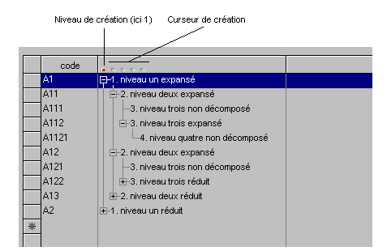

L'objet tableau peut contenir un (et un seul) objet "Arbre". Cet objet permet de présenter une liste de lignes hiérarchisées avec des niveaux. L'utilisateur a la possibilité de développer ou de réduire les différents niveaux.
Une utilisation classique de l'objet arbre est la décomposition d'une nomenclature.
Pour plus de détails, voir le chapitre Arbres du livre consacré à Ywpf.
Exemple :
